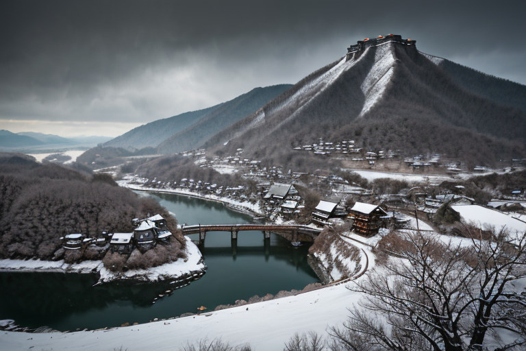
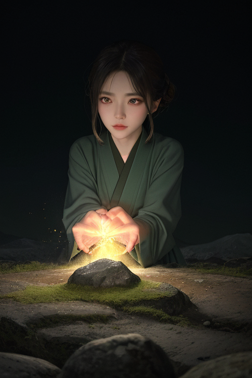
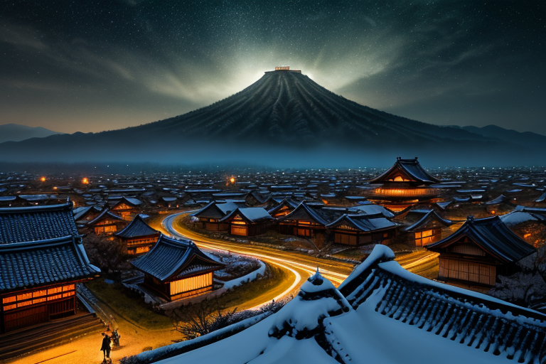
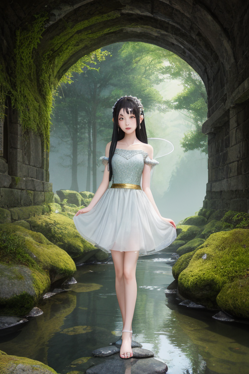
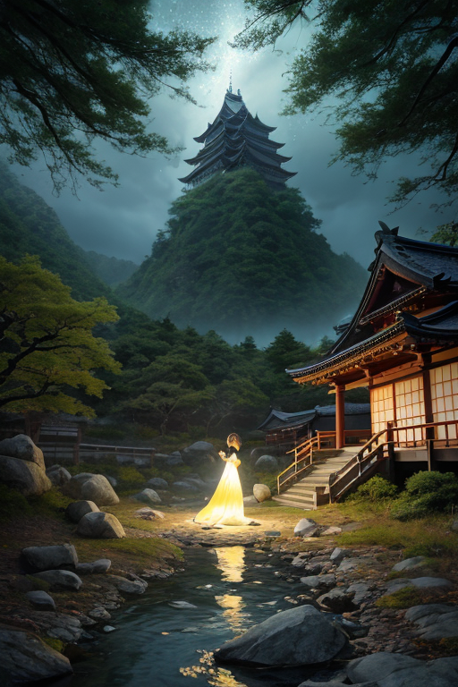

第一章「現実の岐阜」
あなたはまだ気づいていない。この土地にも、王がいることを。
白川郷の合掌造りは、静かに雪を支えている。その三角形の屋根は、単なる建築様式ではない。それは、この地に横たわる巨大な断層の上に、人間が築いた均衡の象徴だ。家屋の一本一本の梁は、地中から伝わる微かな歪みを、木のしなりで吸収し、分散させる。ここは、世界の境目が最も薄くなっている場所の一つである。飛騨と美濃、日本海側と太平洋側、幾つもの境界がこの山間で交差し、複雑な地質のひだを形成している。
岐阜城が金華山の頂に立つのは、単に戦略的な理由からではない。あの位置は、複数の断層線が収束する、地質学的な要所でもある。かつて関ケ原で東西の勢力が激突したのも、この地の「境目」としての性質が、歴史の流れを引き寄せたのかもしれない。今、城跡から見下ろす長良川の流れは穏やかだが、その底では、プレートの沈み込みが絶え間なく続いている。

第二章 歪みの兆候
白川郷の合掌造り集落に、最初の異変は訪れた。夜明け前、家屋の茅葺き屋根に宿った露が、一瞬、水平に揺れた。それは風でもない、微かな地鳴りでもない。境界そのものが、かすかに痙攣したのだ。
ギフリア・バランスは、高山の古い町並みを歩きながら、その震えを感知した。彼の足元、石畳の下では、フォッサマグナの西縁をなす糸魚川-静岡構造線断層が、ひっそりと息を潜めている。本来、彼の王国「ギフリア・バランス」が張り巡らせる「封印線」は、この巨大な境目のエネルギーを緩やかに分散させ、静謐を保ってきた。しかし今、その結界に、目に見えない亀裂が走り始めていた。
下呂温泉の湯煙が、いつもとは違う渦を巻く。源泉から湧き出る熱水の脈が、地下深くの圧力変化を伝えている。バラントが緊急報告を寄越した。「境界山、ギフリスからの観測です。断層面の『滑り』抑制率が、0.7％低下。原因不明。局所的ではありますが、複数点で確認」
王は目を閉じた。視界の裏側に、深緑と金の均衡線が浮かび上がる。線の幾つかが、かすかに波打っている。封印が劣化し始めている。この「境目」の地で、何かが目覚めようとしている――その予感が、彼の、本来感情を持たないはずの核心を、冷たい緊張で締め付けた。

第三章 王の葛藤
岐阜城天守から濃尾平野を見下ろす。かつて関ケ原で天下の境目が決まったこの地で、今、別の「境目」が揺らいでいる。王の視界には、深緑の山脈を貫く無数の金の均衡線が、微かに痙攣している。封印線の劣化だ。
「完全封印を維持するか、一部解放して圧力を逃がすか」
バラントが提示した二つの選択肢が、王の内側に初めて生じた「逡巡」を増幅させる。完全封印は、今のわずかな歪みを未来の大いなる歪みへと先送りする。一部解放は、局所的な小さな「滑り」を許容し、全体の破断を防ぐ。どちらも代償を伴う。
王は、合掌造りの屋根が幾何学的に連なる白川郷を思い浮かべた。あの集落は、厳しい自然との「境目」で、雪という圧力を受け流す形を選んだ。逃がすことで、保つ。
感情を持たぬはずの均衡の王は、自らの核心に問うた。この地の歴史が教えるのは、境目に立つものの決断は、常に「全てを守る」ことではない。何かを選び、何かを諦める調和である、と。
彼は、ゆっくりと目を開いた。視界の均衡線は、依然として波打っていた。

第四章 妖精との対話
郡上八幡の水路沿い、石畳に響く水音だけが時間を刻む。王の前に、主席妖精バラントが静かに顕現した。その姿は、古い石垣と流れる水の境のように、かすかに揺らいでいる。
「この地の封印は、『全てを封じる』ものではありません」とバラントは語り始める。声は水のせせらぎのようだ。「関ケ原という、天下の境目で抉られた亀裂。その余波は、地脈の均衡線を今も不安定にさせています。我々が封じているのは、その『決着』の衝動そのもの。勝敗が生む、一方的な歪みの増幅を、ここで留めているのです」
王は黙って聞く。手元の和紙に、深緑と金の均衡線が微かに浮かぶ。
「白川郷が雪の重みを『逃がす』ように、我々は歴史の重みを『受け流す』。封じることは、消すことではない。増幅せず、緩やかに分散させること。それが、この境目の地で選ばれた調和です」
バラントの言葉に、王は初めて、自らの役割の輪郭を感じた。守るとは、硬直した保持ではない。流れるように、しかし確かに、均衡を保つ持続の形である、と。

第五章 微調整と余韻
王は立ち上がり、手にした和紙を静かに掲げた。深緑と金の均衡線が、岐阜城の石垣、郡上八幡の水路、下呂温泉の湯煙を縫うように走り、白川郷の合掌屋根を優しく包んだ。それは地図ではなく、この地に張り巡らされた「境」そのものの可視化だった。王はその線の、ほんのわずかな乱れに指を触れる。関ヶ原の古戦場の地下で、微かにうごめく断層の「うなり」を、和紙の繊維一本一本に伝えるように。
「増幅せず、分散させる」
王は呟く。感情のないはずの声に、どこか覚悟のような響きがあった。妖精たちの力を集束させ、乱れを、歴史の重みを、雪解け水が岩を迂回するように、ほんの少しだけその進路を変える。地震の規模は変わらない。しかし、その衝撃が一点に集中することを防ぎ、広い範囲で受け流す「角度」を創り出す。それは、朴葉味噌の香りが漂う家屋の倒壊を一軒減らし、鮎が泳ぐ清流の氾濫を一寸抑える、かすかな調整に過ぎない。
作業が終わると、王の姿は薄れ、高山の古い町並みの軒先に佇む影となった。手にした和紙は、無地に戻っている。代償は、彼自身がこの地の「感情」を、かつてない密度で内包し始めたことだ。喜びも悲しみも、すべての境目を、これからはより深く感じながら、立たねばならない。
あなたの町にも、王がいる。